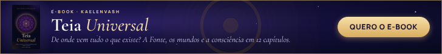
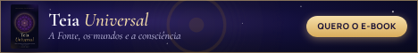
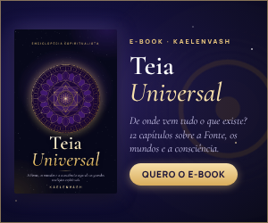
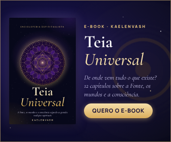
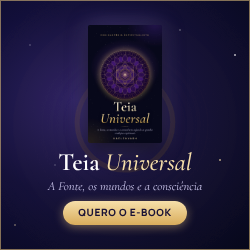
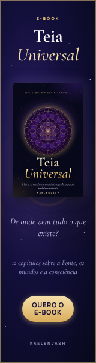
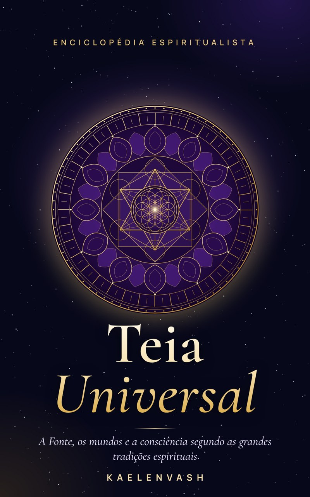

Hotmart · Material para afiliados
Kit do Afiliado — Teia Universal
E-book de Kaelenvash sobre a Fonte, os mundos e a consciência segundo as grandes tradições espirituais. Tudo pronto para você divulgar com o seu link de afiliado.
Como usar: pegue o seu link de afiliado na Hotmart e coloque no clique do banner, na legenda do vídeo ou no lugar de [SEU LINK] nos textos. Não prometa cura, riqueza ou resultados garantidos — o livro é educativo — e não se apresente como autor do livro.
Banners

Banner 728x90Baixar PNG


Banner 468x60Baixar PNG


Banner 300x250Baixar PNG


Banner 336x280Baixar PNG


Banner 250x250Baixar PNG


Banner 160x600Baixar PNG

Vídeo vertical (15 s · 1080x1920)
Para Reels, TikTok, Shorts e Status. Sem áudio: adicione a trilha que preferir no app.
Capa do livro

800x1280Baixar JPG

Modelos de Tweet
TEIA UNIVERSAL — MODELOS DE TWEET / POSTS CURTOS (para X/Twitter, Threads, Instagram, Facebook e WhatsApp) Troque [SEU LINK] pelo seu link de afiliado da Hotmart. Todos têm menos de 280 caracteres. Use 1 por dia, alternando. ----------------------------------------------------------- 1) Plotino falou do Uno. A Cabala, do Ein Sof. As Upanishads, de Brahman. Nomes diferentes, uma mesma intuição. O e-book Teia Universal reúne essas visões num só lugar 👇 [SEU LINK] ----------------------------------------------------------- 2) De onde vem tudo o que existe? 🌌 12 capítulos sobre a Fonte, Deus, os mundos, a consciência e o tempo — segundo as grandes tradições espirituais. Teia Universal ✨ [SEU LINK] ----------------------------------------------------------- 3) Já ouviu falar da Lei do Um, da Teosofia ou da Confederação e quer ver tudo explicado com clareza e com as fontes? Esse e-book foi feito pra você 📖 [SEU LINK] ----------------------------------------------------------- 4) Espiritualidade sem ficar preso a uma única corrente. Teia Universal mostra o que cada tradição ensina, lado a lado, com o olhar da ciência em caixas próprias. [SEU LINK] ----------------------------------------------------------- 5) Anjos, mestres ascensos, guias, elementais, galáxias, multiversos e o tempo segundo as yugas e os maias. Tudo em um e-book ilustrado: Teia Universal 🔮 [SEU LINK] ----------------------------------------------------------- 6) A pergunta que atravessa todas as tradições: como o Uno se torna muitos? Comece sua viagem pela Teia Universal ✨ [SEU LINK] ----------------------------------------------------------- 7) (fio / thread — 3 partes) 1/ A Fonte. O Uno. O Infinito Inteligente. O Absoluto. Por que tantas tradições chegaram a uma ideia tão parecida? 🧵 2/ O e-book Teia Universal compara essas visões capítulo por capítulo, sempre dizendo de qual tradição vem cada ensinamento. 3/ São 12 capítulos, PDF ilustrado + bônus EPUB. Link: [SEU LINK] ----------------------------------------------------------- HASHTAGS SUGERIDAS (use 2 a 4 por post): #espiritualidade #autoconhecimento #espiritualismo #leidoum #consciencia #ebook #teiauniversal BOAS PRÁTICAS - Não prometa cura, riqueza ou resultados garantidos: o livro é educativo. - Não se apresente como autor ou produtor; você é indicador/afiliado. - Não faça spam em grupos ou comentários de outras pessoas.
Modelos de e-mail
TEIA UNIVERSAL — MODELOS DE E-MAIL PARA AFILIADOS Troque [SEU LINK] pelo seu link de afiliado da Hotmart e [NOME] pelo nome do contato (ou apague a saudação personalizada). Envie só para quem aceitou receber seus e-mails. =========================================================== E-MAIL 1 — APRESENTAÇÃO =========================================================== Assunto: De onde vem tudo o que existe? Pré-cabeçalho: Plotino, a Cabala e as Upanishads deram nomes diferentes à mesma resposta. Olá, [NOME]! Plotino chamou de o Uno. A Lei do Um, de Infinito Inteligente. As Upanishads, de Brahman. A Cabala, de Ein Sof. Culturas diferentes, séculos de distância — e uma intuição surpreendentemente parecida. Encontrei um e-book que reúne essas visões num só lugar: Teia Universal, do autor Kaelenvash. Cada capítulo mostra, lado a lado, o que cada tradição ensina e o que a ciência sabe, sem misturar as duas linguagens e sem colocar uma contra a outra. São 12 capítulos: • A Fonte Criadora do Universo • Deus • A Hierarquia do Universo • Superconfederação, Confederação e Federação • Seres, Galáxias e Multiversos • A Consciência, O Tempo no Universo e A Natureza 👉 Conheça o Teia Universal: [SEU LINK] Um abraço, [SEU NOME] =========================================================== E-MAIL 2 — O QUE TEM DENTRO (2 a 3 dias depois) =========================================================== Assunto: Por dentro do Teia Universal Pré-cabeçalho: Ilustrações, tabelas comparativas, glossário e referências. Olá, [NOME]! Quero te mostrar como o Teia Universal foi feito, porque é isso que o torna diferente: ✦ Caixas de leitura em todos os capítulos: "Em uma frase", "Atenção à fonte", "O que diz a ciência", "Discernimento" e "Para refletir". ✦ Ilustrações e diagramas exclusivos, no visual cósmico da Teia Universal. ✦ Tabelas comparativas entre tradições. ✦ Glossário ao fim de cada capítulo e referências para aprofundar. Você recebe o e-book em PDF ilustrado, com sumário clicável, e um bônus em EPUB para ler em aplicativos como Google Play Livros, Apple Livros e Kobo. 👉 Veja todos os detalhes: [SEU LINK] [SEU NOME] =========================================================== E-MAIL 3 — PERGUNTAS FREQUENTES (2 a 3 dias depois) =========================================================== Assunto: "Preciso seguir alguma religião para ler?" Pré-cabeçalho: As dúvidas mais comuns sobre o Teia Universal. Olá, [NOME]! Separei as dúvidas que mais aparecem sobre o Teia Universal: Preciso seguir alguma religião? Não. O livro apresenta várias tradições lado a lado, com respeito, e você tira suas conclusões. O livro diz que essas crenças são comprovadas? Não. Cada visão é apresentada como ensinamento da tradição que a criou. Quando o tema toca a ciência, o consenso atual aparece em caixas próprias. Em quais aparelhos posso ler? O PDF abre em qualquer celular, tablet ou computador. O EPUB funciona em apps de leitura. E se eu não gostar? A compra tem garantia de 7 dias pela Hotmart. 👉 Comece sua viagem pela Teia Universal: [SEU LINK] [SEU NOME] =========================================================== E-MAIL 4 — LEMBRETE CURTO =========================================================== Assunto: Como o Uno se torna muitos? Pré-cabeçalho: A pergunta que atravessa todas as tradições. Olá, [NOME]! 12 capítulos, muitas tradições e uma única pergunta: como o Uno se torna muitos? Se esse tema mexe com você, o Teia Universal é um ótimo ponto de partida. 👉 [SEU LINK] [SEU NOME] ----------------------------------------------------------- Conteúdo educativo. Não prometa cura, riqueza ou resultados garantidos.